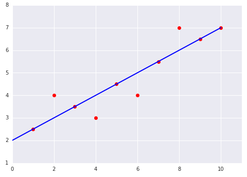
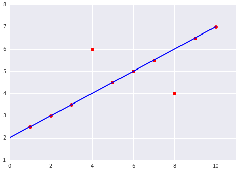

<h1> <a href="https://developers.google.com/machine-learning/crash-course/descending-into-ml/check-your-understanding" target="_blank">
  Questions - 4 </a></h1>

  <div class="row">

  <div class="col-md-6">
  
  </div>
  <div class="col-md-6">

  
  </div>
  </div>
  <ul>
    <li class="ft-fragment step">
      <pre>
      MSE_left = 0.4, MSE_right = 0.8
      So, the right graph has the higher Mean Squared Error (MSE).
          </pre>

    </li>


  </ul>
